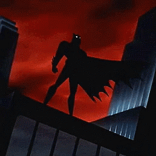
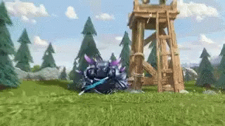
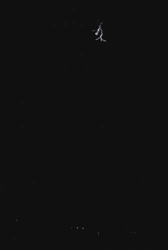
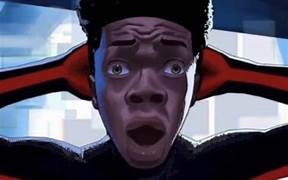

En rentrant du travail, sous un soleil éclatant et les vacances d’été approchant à grand pas, Bruno ne le savait pas encore mais ça vie allait se transformer en un véritable cauchemar. Comme tout les soirs Bruno franchit le seuil de la porte de son appartement mais contrairement à tout ces derniers, il fût pris de sueur froide et de tremblement dans tout son corps.Ses jambes devenues plus lourde que le fichier html de ce site internet, il peina à avancer jusqu’a la chambre de Citaden. En posant sa main sur la poigné de porte des images plus qu’insupportables défilèrent dans sa tête et dans chacune de celle-ci apparaissait une chauve-souris. Bruno ouvra la porte de la chambre et fut confronté à la réalité, son fils avait disparu. Une marque sur le mur représentant une chauve-souris donna la confirmation à Bruno, le responsable ... C’est Batman. Pris d’une rage sans précédant même au cours de ses longues heures de jeu sur League of Legends, Bruno hurla les mots «Omae Wa Mou Shindeiru !!!».

Dack Batman
Chapitre 2: A l'attaque !!!!
Bruno déterminé pour sauver son fils, il décida donc d'établir un plan d'attaque pour sauver Citadin. Comme toutes personnes normaux, appeler la police est un réflexe plus que naturel or notre personnage principal ne réagit pas comme le commun des mortels. Fan du jeux vidéo mobile "Clash of Clans", il forma ses troupes tel que des barbares, des archères, des géants ainsi que le fanmeux "P.E.K.K.A". Pour vous donnez une images, le barbare est associé à la force naturel de Bruno, l'achère au coté feminin, le géant pour sa carure plus que titanesque et son poids musculaire équivalement à celui du massif central et le P.E.K.K.A pour son charisme et son étonnante passion pour les papillons.

P.E.K.K.A vennat d'un jeux extrement intéréssant
Maintenant que son artillerie est prêt, Bruno part enfin à la recherche de son bien aimé fils unique.En ce temps plus que morose, le moral est au plus bas, les bandits se font rares, mais la rage reste présente.
Chapitre 3: Un triste dénouement
Marchant seul vers le repère de Batman, Bruno, toujours brûlant de rage avait pourtant les idées devenus très claires et des yeux remplis d’une détermination sans pareil. Enfin arrivé devant le repère de l’homme chauve-souris, Bruno pris une grande inspiration et se dirigea rapidement vers une porte dérobée qu’il avait repéré au préalable. Ayant pénétré facilement dans le bâtiment, Bruno s’étonna de n’entendre aucun bruit ni d’apercevoir aucun système de sécurité, il continua alors jusqu’au sous-sol où se situe les cellules. L’absence de signe de vie dans le bâtiment commenca de plus en plus à faire douter Bruno, se pourrait-il qu’il se soit tromper de bâtiment ? Mais ses doutes furent rapidement dissipés quand il aperçu dans une des cellules le corps de son fils, Bruno se rua vers ce dernier et fut soulager de ressentir le souffle de son fils, il n’avait plus beaucoup de force car il avait été drogué mais il était vivant, c’est le principal. Bruno porta Citaden sur son dos et prit la fuite de ce bâtiment mais après avoir passer la porte de sortie, le pire arriva, Batman apparu devant eux. Le tonnerre s’intensifiant, le vent soufflant comme dans un ouragan et l’air devenu lourd, Bruno le savait, face a cette personne le père et son fils ne pourrait pas rentrer ensemble ce soir il prit alors la décision que son cœur lui dicta, la décision d’un père qui veut le meilleur pour son fils. Il prena Citaden dans ses bras et lui dit «Écoute mon grand, avoir un combat avec le vrai Batman c’est le rêve de tout homme qui se respecte et aujourd’hui c’est à mon tour de réaliser ce rêve, alors cours, vie, vie pour toi et aussi un jour réaliser ce rêve.». Citaden prit alors la fuite sous les cris d’agonie et de plaisir de son père à chaques coups qui résonnaient en rythme avec le tonnerre de cette nuit là.
Citadin en ce moment
Chapitre 4: Les étapes lors d'évement
Un térrible drame ce passa, beaucoup de sang ont coulé, un acte volontaire pour sauvé son fils en échange de sa vie. Le tonnerre gronda, la pluie qui pleure la mort de Bruno. Ce n'est ni un rêve mais bien la dure réalité pour Citadin. Voir mourir son père devant lui la rendu plus que triste, les mots ne peuvent décrire cette scène. Malgrés les pleures et les cris, Citadin entendit au loins les dernières paroles de son père : "Sauve toi mon fils et ne te retourn pas". Il ne réfléchit plus longtemps et sortit de cette enfer.

Une fois enfuie du repère de Batman, Citaden rentre à la maison totalement débousolé, choqué de ce qu'il s'est passé, il en parle à sa mère. Chokbar de zinzin la femme de Bruno ne croyait pas l'histoir de son propre fils

POV : La femme de Bruno
Ne savent pas quoi faire, la petite famille de Bruno se mire en colère sur le destin destiné au destin de Bruno et Mirèlene (sa famme) commence à insulter Bruno d'imbésile puisuqu'il est parti tout seul sauver son fils.
Chapitre 5: Me dit pas que c'est pas vrai !!!!
La mort de l'heureux Bruno à fait le tour de la ville vu qu'il est très connu pour sa bonté, sa générosité et son talent plusque monstrueux. Toute la ville a décidé de commémorer la mémoire de Bruno, une grande cérémonie a été organisé, pour l'évement, Bruno Mars, un ami personel de Bruno à souhaiter chanté toutes ses chansons préférées qui sont :
Avec tous ces émotions, Citadin ne sait pas trop quoi faire.Plusieurs questions lui traverent l'esprit comme par exemple faire un BTS patisserie ou bien crée son commerce de peluche mais pas sûr à 100% que la 2ème option soit accepté par parcoursup
Prochainement dans le Tome 3, Que va faire Citadin et sa famille après tous ces evenements ?